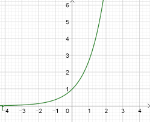

Chapitre 12 - La fonction exponentielle
I - Définition et nombre \(e\)
La fonction exponentielle est l'unique fonction qui est égale à sa propre dérivée et qui vaut 1 en zéro.
Définition mathématique :
- Elle est définie sur \(\mathbb{R}\) (de \(-\infty\) à \(+\infty\)).
- Pour tout \(x\), \(f'(x) = f(x)\).
- \(f(0) = 1\).
On note cette fonction \(f(x) = \exp(x)\) ou plus souvent \(e^x\).
Le nombre \(e\) : C'est la base de l'exponentielle. Sa valeur approchée est \(e \approx 2,718\).
C'est un nombre irrationnel, comme \(\pi\).
II - Propriétés algébriques (Les règles de calcul)
La fonction exponentielle suit les mêmes règles que les puissances. C'est ce qui rend les calculs simples !
Pour tous réels \(a\) et \(b\) :
- Produit : \(e^a \times e^b = e^{a+b}\)
- Inverse : \(\frac{1}{e^a} = e^{-a}\)
- Quotient : \(\frac{e^a}{e^b} = e^{a-b}\)
- Puissance : \((e^a)^n = e^{n \times a}\)
III - Étude de la fonction (Variations et Signe)
Règle d'or : Pour tout réel \(x\), \(e^x > 0\).
Une exponentielle n'est JAMAIS négative ou nulle. C'est crucial pour tes tableaux de signes !
Sens de variation :
Comme sa dérivée est elle-même (\(f' = e^x\)) et qu'elle est toujours positive, la fonction exponentielle est strictement croissante sur \(\mathbb{R}\).

IV - Dérivée de \(e^{u(x)}\)
En exercice, on te donnera souvent des fonctions plus complexes que juste \(e^x\).
Formule de dérivation : Si \(u\) est une fonction dérivable, alors la dérivée de \(e^{u(x)}\) est :
\((e^{u})' = u' \times e^{u}\)
Exemple type contrôle :
Soit \(f(x) = e^{5x+3}\).
Ici \(u(x) = 5x+3\), donc \(u'(x) = 5\).
La dérivée est donc \(f'(x) = 5e^{5x+3}\).
V - Résolution d'équations
Grâce à sa croissance stricte, on a deux règles simples pour résoudre des exercices :
- \(e^a = e^b \iff a = b\)
- \(e^a < e^b \iff a < b\)